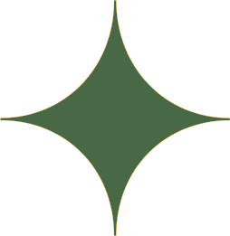
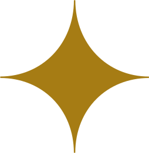

Sonja & Corentin
8.8.2026
General information

 Program
Program

 Sunday 9th of August 2026
12:00 - Lunch
Venue
Gift
Sunday 9th of August 2026
12:00 - Lunch
Venue
Gift
 Please confirm your attendance by April 1st by completing the form using the link below.
RSVP
Please confirm your attendance by April 1st by completing the form using the link below.
RSVP
How to get there
Our wedding will take place in La Turballe, a small seaside town in north-western France, 30 minutes away from the city of Saint-Nazaire.
Getting there takes a little planning, especially for those travelling from abroad, but we hope the information below will help make your journey as smooth as possible.

Flying from abroad
The easiest way to reach the venue when coming from abroad is to fly to Nantes airport. There are no direct flights from Helsinki, and the journey usually takes 5 to 7 hours (including one layover).
Another option is to fly to Paris CDG airport, and take the train to Nantes or Saint-Nazaire. This option might be a little more expensive, but is a great alternative if you wish to spend a few days in Paris.
Helsinki ➟ Nantes
One layover – approx. 5h-7h
Helsinki ➟ Paris (CDG airport)
direct flight - approx. 2h30–3h
From Paris
The easiest way to reach Saint-Nazaire from Paris is by train. Trains leave regularly from Montparnasse railway station (70 minutes form CDG airport), either direct to Saint-Nazaire, or with a change in Nantes.
Paris Montparnasse ➟ Nantes
approx. 2h
Paris Montparnasse ➟ Saint-Nazaire
approx. 3h
Some trains leave directly from CDG airport, but are usually longer and more expensive.
For train routes, schedule and tickets, visit:
www.sncf-connect.com
If you wish to rent a car in Paris, the drive to Saint-Nazaire takes about 5 hours.
From Nantes
Trains leave every hour from Nantes railway station to Saint-Nazaire and the journey takes about 40 minutes.
The car ride takes about 60 minutes.
Getting around locally
Saint-Nazaire – Guérande – La Turballe
You can use the local bus network to get around the area. For the routes and schedule, visit:
www.lilapresquile.fr
On the wedding day
We will organize a shuttle service to and from the wedding venue, from Guérande and Saint-Nazaire (depending on demand).
More details about the route and schedule will be shared later.
Feel free to reach out to us in case of any question regarding the planning of your journey!
Where to stay
Our wedding will take place during peak season, and hotels in the area tend to fill up quickly over the summer. We recommend booking your accommodation as early as possible.
We suggest the following hotels in Guérande, located about 15 minutes from the venue:
Sure Hotel by Best Western ★★★
From 67€/room
surehotelguerande.com
Best Western Hotel de la Cite & Spa ★★★★
From 100€/room
www.hotel-guerande.com
If you are traveling as a group or prefer a wider range of options, you may also want to explore vacation rentals (such as Airbnb), which can be a great and often more affordable alternative.
If you need any help organizing your stay or comparing options, please don’t hesitate to reach out — we’ll be very happy to help.
Visit the area
Our wedding will take place in La Turballe, on the Guérande peninsula, a lovely part of the world to spend a bit of time in. If you’re planning to extend your stay in the area, you can easily turn the weekend into a mini-break. There’s plenty to see and do, whether you feel like beaches, small towns, food, walks, or a city day.
Guérande peninsula
The peninsula is all about beautiful beaches, stunning coastal walking paths, and easy seaside charm. There are plenty of lovely small towns along the coast where you can stop for a drink, wander by the harbour, or grab an ice cream.
We especially love simply spending an afternoon at the beach, making the most of the summer warmth and the freshness of the Atlantic. For those feeling a bit more adventurous, the area also offers a range of water activities out on the ocean.
The walled town of Guérande is also well worth a visit, along with the famous salt marshes that surround it, which are a big part of the region’s landscape and history.
More on the tourist office of La Baule - Guérande website:
labaule-guerande.com
Saint-Nazaire
About 30 minutes from La Turballe, Saint-Nazaire is a larger city with a strong maritime identity. Its shipyards and seafront are worth exploring, and the city also has a fascinating history, including its role during World War II.
With a mix of industrial heritage, museums, and coastal walks, it’s an interesting stop if you want a different perspective on the region.
More on the tourist office of Saint-Nazaire website:
www.saint-nazaire-tourisme.uk
Nantes
Located just over an hour from La Turballe, Nantes is a vibrant and creative city, perfect for a full day of exploration. Its historic center, cultural life, and lively neighborhoods offer a nice contrast with the coast. Visitors can combine history, museums, shopping, and restaurants in one visit.
Among the city’s best-known attractions are the Château des Ducs de Bretagne and Les Machines de l’Île, along with many other cultural and architectural discoveries throughout the city.
More on the tourist office of Nantes website:
www.levoyageanantes.fr
Contact
Sonja Pajukoski
sonja.pajukoski@gmail.com
+358 45 324 4433
Bridesmaids
Elli Pajukoski
+358 40 937 4990
Jenny Ylilammi
+358 44 074 4056

Corentin Fleur
corentin.fleur@live.fr
+33 7 86 83 86 04
Groomsmen/maid
Emma Fleur
+33 6 07 73 97 32
Thibault Fenain
+33 7 68 43 47 00